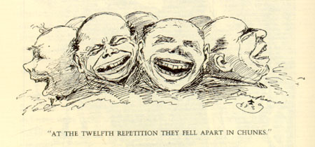

|
The Beard illustration below is from Chapter 22 of
Connecticut Yankee, where MT has Hank describe a
dinner in the monastery at the Valley of Holiness. Hank's
promise to restore the fountain raises the spirits of the
monks, and soon "the mead began to go round." "By the time
everybody was half-seas over, the holy community was in
good shape to make a night of it." After a number of
"questionable stories" are told, Hank himself tells a joke.
It's his audience's response to it that Beard is depicting.
The anecdote recalls MT's career as an after-dinner speaker
and humorist. In the way they associate monks with such
indecorous behavior, however, both MT's prose and Beard's
art also evoke familiar anti-Catholic stereotypes.
 |